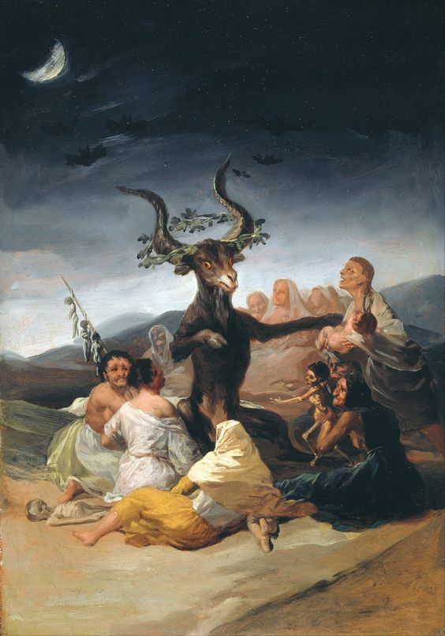
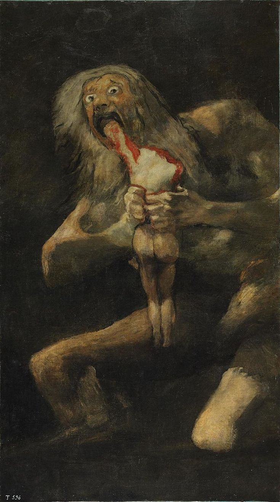
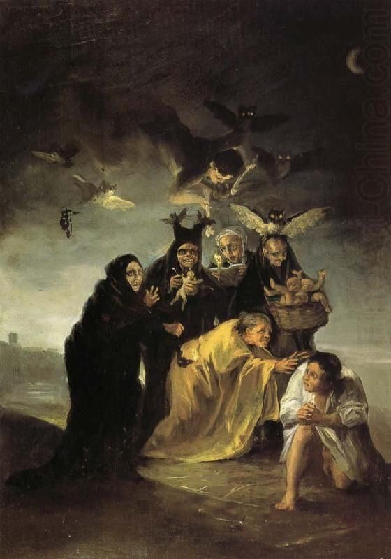
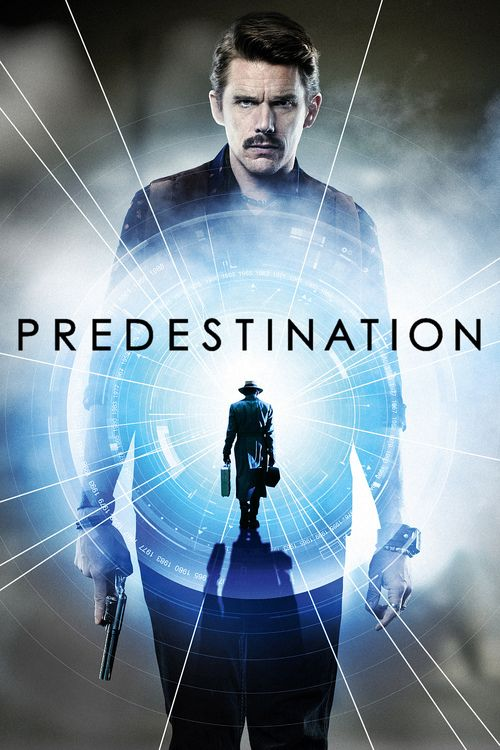
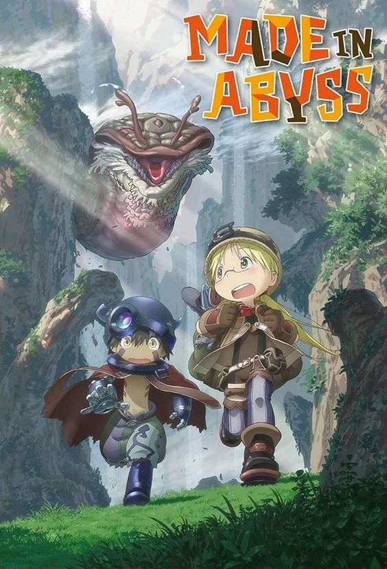
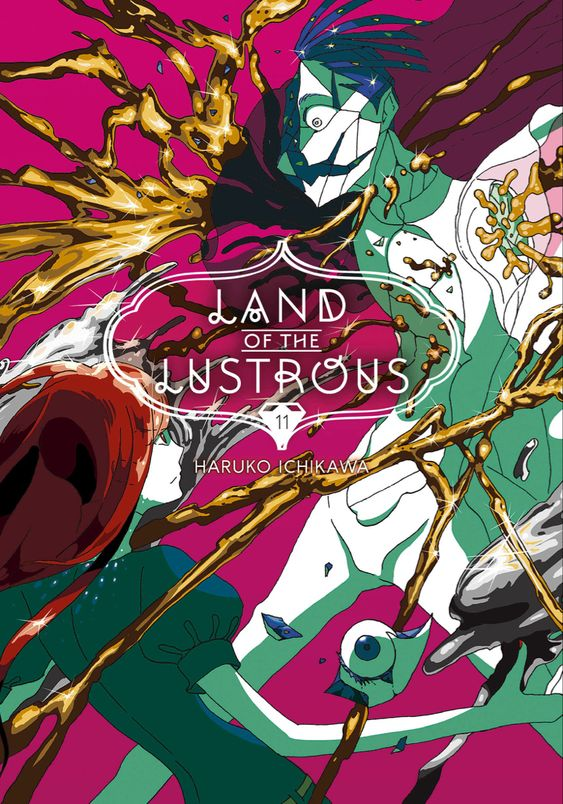

Francisco de Goya
Me encanta las obra de Francisco de Goya, especialmente sus pinturas del periodo oscuro que tuvo en su vida ya que retratan la crueldad y la frialdad.
  Películas sobre Viajes en el Tiempo
Disfruto mucho las películas que exploran el concepto de viajes en el tiempo. ".

Animes Favoritos
Me apasiona el anime de narrativa profunda.
 